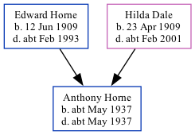

Anthony J Horne cMay 1937 - c1937
[ Home ] | [ Calendar ] | [ Surnames Index ] | [ Family History ]The child of Edward Horne (a gardener heavy) and Hilda DaleAnthony Horne, the second cousin once-removed on the father's side of Nigel Horne, was born in Thanet, Kent, England c. May 19371.
He died on the same day2.
Parents
- Edward John was born on Jun 12, 1909
- Hilda May was born on Apr 23, 1909
Citations
- England & Wales births 1837-2006 - Findmypast
- England & Wales deaths 1837-2007 - Findmypast
Media
England & Wales births 1837-2006 - BMD/B/1937/2/AZ/000579/058
England & Wales deaths 1837-2007 - BMD/D/1937/2/AZ/000437/037
Family Tree
Generated by ged2site. Last updated on Nov 13, 2024